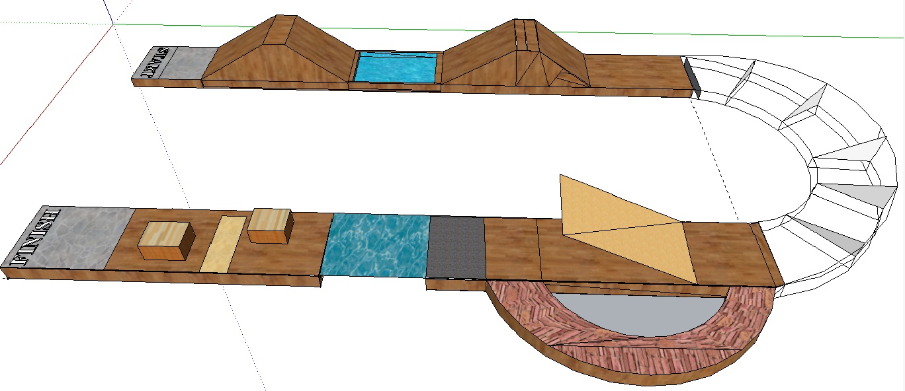

Designing of a manually controlled robot
(wire or wireless) that can traverse
through every possible terrain;
obstacles, bumpers, bridges, sand,
pebbles, marbles, lubricant, glass etc.
Arena

Bot Specification
The bot should fit in a box of
25cm*25cm*20cm / 10” * 10” * 8” (l*b*h).
External remote control will not be
considered in the size constraint.
The participants will be provided with a
220V, 50Hz single phase power supply.
However the robots cannot use more than
18V at any instant.
The control for the robots can be wired or
wireless. In case of wired bot sufficient
amount of wire must be brought by the
participants.
The bot specification must be maintained
strictly during the entire event, failing to
which will lead to immediate disqualification.
A bot may weigh up to 4 Kg. But not more
than that.
Machine cannot be constructed using
ready made Lego kits or any ready made
mechanism. Violating this clause will lead to
the disqualification of the machine.
If the machine is wired then the wire should
remain slack under all circumstances during the competition. All the wires coming out of
the machine should be stacked as a single unit.
Improper wiring may lead to direct
disqualification even before the event.
Use of IC (Internal Combustion) Engines are
prohibited.
If the judges consider that a robot runs
high risk of damaging or ruining the arena, they
will not permit it to run.
No fans & weaponries can be used in the
game. But the bots can overtake the other by
legal means.
General Rules
Competition is open to undergraduate
students only.
The maximum number of members in a team must not exceed 4.
Participants can belong to different colleges.
But only one person can control the bot at any
instant of time.
An individual cannot be a member of more
than one team for the event.
Each member of the team must bring their
own college ID cards.
Game Rules
For any kind of technical failure in bot or any
other kits, the each group will be given extra 5
minutes. After 5 minutes, points will be
deducted or the bot may be subjected to
disqualification.
2 bots are suggested to race on the same
terrain at the same time. The bot which
touches the end line first will be the winner.
(The racing conditions will be announced on
the day of the event).
The point distribution & deduction method
will be notified on the time of the event.
The arena can be modified further.
If the robot falls of the arena or is unable to
cross any obstacle the team may use a hand
touch and place the bot in its previous
position. Only two such hand touches will be
allowed.
If any team uses a third hand touch, it will be
instantly disqualified in the preliminary round
& will be rewarded negative bonus points in
case of final.
Two time-outs (2 min max) will be provided
for each team and can be used for adjusting
robot's circuitry/minor adjustments.
Conveyor belt is strictly prohibited.
Any kind of tools are allowed unless it
damages the track or the opponent bots.
Event Rounds
The event comprises of 2 rounds:
Prelims (The competition parameter is time)
Final (The competition parameter is points)
The First round will be the preliminary round &
the number of teams in the finals will depend
on the number of teams entering the
competition in the preliminary level.